Asian Koel (Kokil):
Known for its loud, resonant calls during the breeding season, the male Asian Koel is a glossy black cuckoo with crimson eyes. The female is dark brown with white spots.

Black Drongo (Finge):
This insectivorous bird is known for its glossy black plumage, forked tail, aggressive and fearless nature. It is a familiar sight perched on bare branches or wires in open countryside.

Brahminy Kite (Shankh Chil):
A distinctive bird of prey with a contrasting chestnut body and a striking white head and breast. It can often be seen soaring over coasts and wetlands.
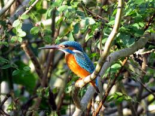
Common Kingfisher (Machh Ranga):
This brilliantly colored blue and orange bird is a common sight near bodies of water where it dives to catch small fish. It perches patiently on branches before making swift, precise dives to snatch its prey.
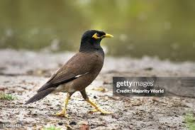
Common Myna (Shalik):
These stocky, brownish starlings are often found in urban and suburban environments. They are noisy and confident, with a knack for imitating the human voice.
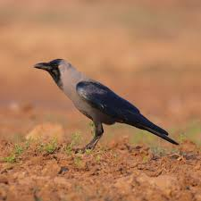
House Crow (Pati Kak):
A highly adaptable and intelligent bird, the House Crow is abundant in developed areas across the country. It has a dark grey-brown body with glossy black plumage on its head, throat, and wings.
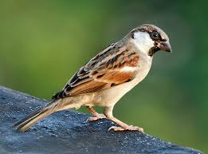
House Sparrow (Chorui):
A familiar bird known for its adaptability to human environments. This small, stocky bird is one of the most widespread wild bird species, found throughout the Indian subcontinent and across the world.
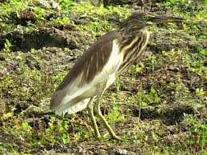
Indian Pond Heron (Kani Bok):
This small, stocky heron appears dull buff-brown when still. However, it transforms in flight with a brilliant flash of white from its wings, a phenomenon that has made it famous among birders.
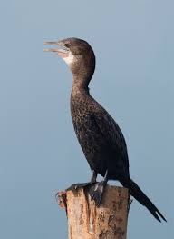
Little Cormorant (Pankowri):
Slightly smaller than the Indian Cormorant, this is an excellent diver and swimmer. In breeding season, it has a glistening all-black plumage.
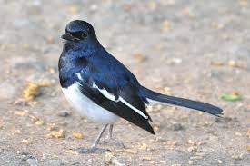
Oriental Magpie-Robin (Doel):
As the national bird of Bangladesh, this striking, black-and-white songbird is commonly found in gardens, parks and wooded areas. The male has glossy blue-black upper parts while the female is greyish-black.
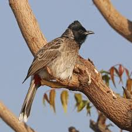
Red-vented Bulbul (Bulbul):
A noisy and bold bird, the Red-vented Bulbul is recognized by its dark head, a crested crown and a distinctive crimson-red patch beneath its tail.
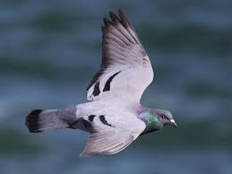
Rock Pigeon (Payerra):
This bird is the wild ancestor of domestic pigeons and is found nesting on cliffs and coasts, but feral populations are ubiquitous in cities and towns.
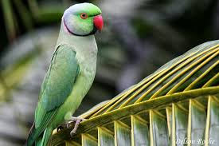
Rose-ringed Parakeet (Tiya Pakhi):
This medium-sized parrot species is native to Africa and the Indian subcontinent and feral populations have been introduced to many other parts of the world.
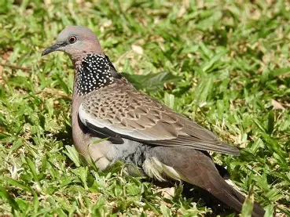
Spotted Dove (Telaghughu):
A medium-sized, swift-flying dove with a distinctive spotted patch on its neck. It is a common resident in suburban areas.
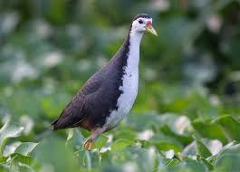
White-breasted Waterhen (Dahuk):
This shy, medium-sized waterbird is recognized by its slate-grey body and a clean white face and breast. It is often heard more than seen, with its distinctive calls echoing from dense waterside vegetation.